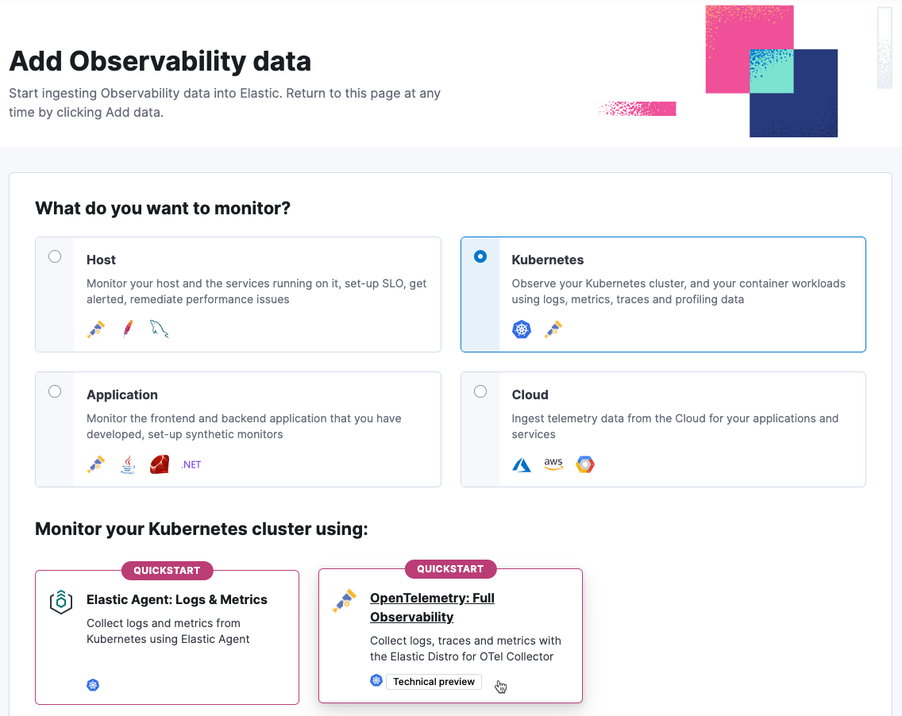

Quickstart: Unified Kubernetes Observability with Elastic Distributions of OpenTelemetry (EDOT)
editQuickstart: Unified Kubernetes Observability with Elastic Distributions of OpenTelemetry (EDOT)
editThis functionality is in technical preview and may be changed or removed in a future release. Elastic will work to fix any issues, but features in technical preview are not subject to the support SLA of official GA features.
In this quickstart guide, you’ll learn how to send Kubernetes logs, metrics, and application traces to Elasticsearch, using the OpenTelemetry Operator to orchestrate Elastic Distributions of OpenTelemetry (EDOT) Collectors and SDK instances.
All the components will be deployed through the opentelemetry-kube-stack helm chart. They include:
- OpenTelemetry Operator.
-
DaemonSetEDOT Collector configured for node level metrics. -
DeploymentEDOT Collector configured for cluster level metrics. -
Instrumentationobject for applications auto-instrumentation.
For a more detailed description of the components and advanced configuration, refer to the elastic/opentelemetry GitHub repository.
Prerequisites
edit- An Elasticsearch cluster for storing and searching your data, and Kibana for visualizing and managing your data. This quickstart is available for all Elastic deployment models. To get started quickly, try out our hosted Elasticsearch Service on Elastic Cloud.
- A running Kubernetes cluster (v1.23 or newer).
- Kubectl.
- Helm.
- (optional) Cert-manager, if you opt for automatic generation and renewal of TLS certificates.
Collect your data
edit- In Kibana, go to the Observability UI and click Add Data.
-
Under What do you want to monitor? select Kubernetes, and then select OpenTelemetry: Full Observability.
 -
Follow the on-screen instructions to install all needed components.
The default installation deploys the OpenTelemetry Operator with a self-signed TLS certificate valid for 365 days. This certificate won’t be renewed unless the Helm Chart release is manually updated. Refer to the cert-manager integrated installation guide to enable automatic certificate generation and renewal using cert-manager.
Deploy the OpenTelemetry Operator and EDOT Collectors using the kube-stack Helm chart with the provided
values.yamlfile. You will run a few commands to:- Add the helm chart repository needed for the installation.
- Create a namespace.
- Create a secret with an API Key and the Elasticsearch endpoint to be used by the collectors.
-
Install the
opentelemetry-kube-stackhelm chart with the providedvalues.yaml. -
Optionally, for instrumenting applications, apply the corresponding
annotationsas shown in Kibana.
Visualize your data
editAfter installation is complete and all relevant data is flowing into Elastic, the Visualize your data section provides a link to the [OTEL][Metrics Kubernetes]Cluster Overview dashboard used to monitor the health of the cluster.

Troubleshooting and more
edit- To troubleshoot deployment and installation, refer to installation verification.
- For application instrumentation details, refer to Instrumenting applications with EDOT SDKs on Kubernetes.
- To customize the configuration, refer to custom configuration.
- Refer to What is Elastic Observability? for a description of other useful features.